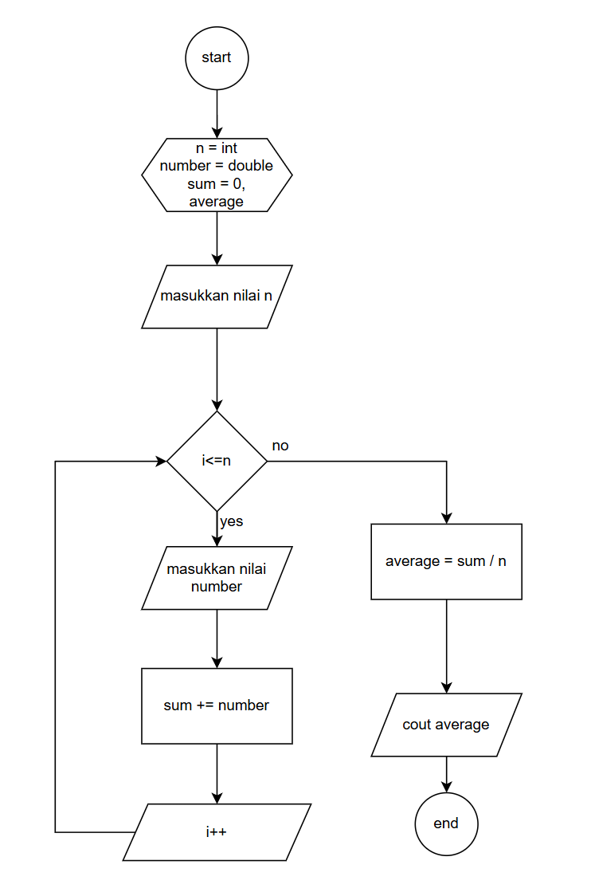

Deskripsi
Menghitung rata rata dapat dilakukan dengan menambahkan nilai dari variabel lalu membagi total nilai variabel tersebut berdasarkan jumlah variabel yang ada
Flowchart
Pseudocode
1. mulai
2. input nilai
3. i<=n? jika tidak = -na
4. input nilai number
5. sum += number
6. i++
7. average = sum / n
8. cout average
9. selesai
code in c++
#include <iostream>
using namespace std;
int main() {
int n;
double number, sum = 0, average;
cout << "Masukkan jumlah bilangan: ";
cin >> n;
for(int i = 1; i <= n; i++) {
cout << "Masukkan bilangan ke-" << i << ": ";
cin >> number;
sum += number;
}
average = sum / n;
cout << "Rata-rata dari " << n << " bilangan adalah: " << average;
return 0;
}
Contoh Hasil
Misal Input = 5 , 7, 7
Hasil = Rata-Rata dari 3 bilangan adalah: 6.333